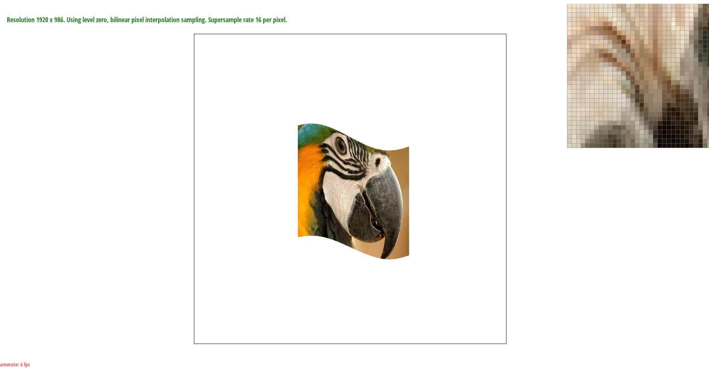

CS184 Project 1 - Max Lord and Eugenia Gavrilova
Task 1
1. Walk through how you rasterize triangles in your own words.
First, we define the bounding box of the triangle as the smallest rectangle that completely encloses the triangle.
For each pixel (x,y) in this bounding box, we check whether the center of the pixel at coordinate (x + .5, y + .5) fulfills the point-in-triangle three-line test,
which we determine by plugging (x + .5, y + .5) into an equation which will return 0 if the point is on the edge, < 0 if the point is outside the edge, or > 0 if the point is inside the edge.
If the point is inside the edge (< 0) for all three lines, we determine the point is inside the triangle. Also, we must factor in winding order,
which we can consider by also determining the point is in the triangle if the point is "outside the edge" (> 0)
for all three lines, which can only be the case if the point is in the triangle but has opposite winding order.
For each pixel, if we have determined it is inside the triangle by our three-line test, we color the pixel with the triangle color, and if not, we don't color the point with the triangle color.
2. Explain how your algorithm is no worse than one that checks each sample within the bounding box of the triangle.
We loop the x pixel from left x bound to right x bound and the y pixel from top y bound to bottom y bound,
where left x bound is defined as the floor of the minimum of all the x values, so that must bound the left side of the triangle.
The right x bound is defined as the ceiling of the maximum of all the x values, so that must bound the right side of the triangle.
The top y bound is defined as the floor of the minimum of all the y values, so that must bound the top of the triangle.
The bottom y bound is defined as the ceiling of the maximum of all the y values, so that must bound the bottom of the triangle.
Since we loop between these bounds, no other samples are considered, so it is no worse (and is equal to) one that checks each sample within the bounding box of the triangle.
3. Show a png screenshot of basic/test4.svg with the default viewing parameters and with the pixel inspector centered on an interesting part of the scene.

Task 2
1. Walk through your supersampling algorithm and data structures. Why is supersampling useful? What modifications did you make to the rasterization pipeline in the process? Explain how you used supersampling to antialias your triangles.
To supersample, we make the same nested loop through the pixels in the bounding rectange of the triangle.
Next, we derived the formula that for sample rate k, the supersample coordinates in both directions are (x or y) + 1/(2*sqrt(k)), (x or y) + 3/(2*sqrt(k)), etc.
For each supersample, we ran the three-line test (with winding order considered) and saved each supersample result in sample_buffer, which
we expanded from size width*height to sample_rate*width*height to fit every supersample. For example, in a 4x4 supersample of sampling rate 16, the
supersamples of point (0,0) are held at indices 0-15 in the sample buffer, and the supersamples of point (1,0) are held at indices 16-31.
Given point (x,y) and supersample i from 0 to sample_rate - 1, we can get the corresponding supersample from sample_buffer with index y * width * sample_rate + x * sample_rate + i.
To fix the pipeline, we downsample to the width * height size rgb_framebuffer_target by taking the average color at each supersample to determine the color for the corresponding pixel.
We also needed to resize the sample buffer to sample_rate*width*height to fit our supersamples, which meant changes in RasterizerImp,
fill_pixel (to fit the new buffer and prevent supersampling by setting every supersample to the color of the pixel without actually supersampling),
rasterize_triangle, set_sample_rate, and resolve_to_framebuffer. Supersampling is useful because it helps antialias the triangles by removing the sharp edges, because
pixels where the edges are split on either side of the line won't be solid, and will instead be a weighted average of the triangle and background colors.
2. Show png screenshots of basic/test4.svg with the default viewing parameters and sample rates 1, 4, and 16 to compare them side-by-side. Position the pixel inspector over an area that showcases the effect dramatically; for example, a very skinny triangle corner. Explain why these results are observed.
These results are observed because a supersample of 1 can only be the triangle color, and a supersample of 16 has more colors available than a supersample of 4 because more samples are being averaged together so there are more possible averages and therefore more possible corresponding colors.
Task 3
1. Create an updated version of svg/transforms/robot.svg with cubeman doing something more interesting, like waving or running.
Feel free to change his colors or proportions to suit your creativity. Save your svg file as my_robot.svg in your
docs/ directory and show a png screenshot of your rendered drawing in your write-up. Explain what you were trying to do with cubeman in words.
After manipulating the arms by adding rotation to the end of the left arm and the entirety of the right arm, the cube man is now waving.
Task 4
1. Explain barycentric coordinates in your own words and use an image to aid you in your explanation. One idea is to use a svg file that plots a single triangle with one red, one green, and one blue vertex, which should produce a smoothly blended color triangle.
Barycentric coordinates are a coordinate system where each point is defined by how close it is to each vertex of the enclosing shape,
where the distance to each vertex acts as a weight on the value (color, texture coordinates, etc) of that vertex. In the image below, we can see that
the color of each point is based on its distance from each vertex of the triangle, which each have a designated color whose influence is interpolated across the triangle's area.
2. Show a png screenshot of svg/basic/test7.svg with default viewing parameters and sample rate 1. If you make any additional images with color gradients, include them.
Task 5
1. Explain pixel sampling in your own words and describe how you implemented it to perform texture mapping. Briefly discuss the two different pixel sampling methods, nearest and bilinear.
Pixel sampling is a process by which we can map coordinates bound by an image space to a different set of coordinates bound by a texture space,
thus allowing us to overlay corresponding texels (pixel values in the texture file) onto an image and give it the appearance of texture.
Following a similar initial process to task 1, we implemented this by iterating over every pixel in a bounded triangle;
then if the pixel is within the triangle, we calculate the alpha, beta, and gamma values of its barycentric coordinates
and multiply them by the vertices of the corresponding triangle in texture space to locate and extract the texel, then finally fill it in in image space.
Using the nearest pixel sampling method, we find the nearest pixel in texture space to our calculated barycentric coordinates by
rounding the (u, v) values, clamping them if they go out of bounds, and return the color of that pixel. Using the bilinear pixel sampling method,
we find the four nearest pixels in texture space by using all combinations of the floor and ceiling of (u, v) and clamping as described in the
nearest-pixel method; however, we do two linear interpolations of the pixel colors, first pairing the two sets with the same u values, then interpolating the results once again.
2. Check out the svg files in the svg/texmap/ directory. Use the pixel inspector to find a good example of where
bilinear sampling clearly defeats nearest sampling. Show and compare four png screenshots using nearest sampling at
1 sample per pixel, nearest sampling at 16 samples per pixel, bilinear sampling at 1 sample per pixel, and bilinear sampling at 16 samples per pixel.
Nearest 1 Sample/Pixel:
Nearest 16 Samples/Pixel:
Bilinear 1 Sample/Pixel:
Bilinear 16 Samples/Pixel:

3. Comment on the relative differences. Discuss when there will be a large difference between the two methods and why.
The difference between Bilinear 1 Sample/Pixel and Nearest 1 Sample/Pixel is quite large, as Nearest 1 looks very choppy
and has many pixels that change color drastically compared to nearby pixels. Nearest 16 Samples/Pixel ameliorates this issue to an extent, but
only is about as good as Bilinear 1 Sample/Pixel, while taking significantly more computing power. Bilinear 16 Samples/Pixel is the best, with all
almost all color changes having smooth gradient of pixel colors instead of sharp changes like Nearest 1 Sample/Pixel. The largest difference will be in
situations where the color/texture changes quickly across just a few pixels, because bilinear will be able to give a small weight to the color of nearby pixels
which makes the color/texture change between two neighboring pixels less sudden.
Task 6
1. Explain level sampling in your own words and describe how you implemented it for texture mapping.
Level sampling is a process by which we can sample from different “levels” of resolution in a texture space
depending on the proximity of objects to the image plane. We do this by calculating difference vectors that
reflect the extent of change in color between neighboring pixels, which allows us to determine the nearest
appropriate mipmap level. These difference vectors are plugged into the formula from lecture 5, slide 65,
to give us the nearest appropriate mipmap level to pixel sample from.
In our implementation, we support 3 different types of level sampling, each evaluated per-pixel. The first, L_ZERO,
samples from the zeroth level of the mipmap, which corresponds to the highest resolution texture image.
L_NEAREST uses the aforementioned formula to determine which mipmap level we should sample texture from for
a given image pixel and then applies it to the image space. The final, L_LINEAR, samples from the nearest mipmap
level as well as the one above it (so the texture image with double the “nearest” resolution),
interpolates the two pixel color values and returns the result.
2. You can now adjust your sampling technique by selecting pixel sampling, level sampling, or the number of samples per pixel.
Describe the tradeoffs between speed, memory usage, and antialiasing power between the three various techniques.
Pixel sampling is fastest, because it just requires a simple matching of pixels. Level sampling is slower, but provides the benefit of
variable levels of detail, prioritizing certain spaces in the image for detail over others. Supersampling is also slower, because it needs to
take several samples (with all of the accompanying calculations) per pixel.
In terms of memory, adding more samples per pixel has the highest cost, because we are storing several data points for every pixel.
Level sampling is also more expensive than pixel sampling, because it stores multiple mipmap levels.
Supersampling and level sampling have similar antialiasing power, but supersampling is more expensive, although both supersampling and level sampling
are superior to pixel sampling in terms of antialiasing.
3. Using a png file you find yourself, show us four versions of the image, using the combinations of L_ZERO and P_NEAREST,
L_ZERO and P_LINEAR, L_NEAREST and P_NEAREST, as well as L_NEAREST and P_LINEAR.
L_ZERO and P_NEAREST:
L_ZERO and P_LINEAR:
L_NEAREST and P_NEAREST:
L_NEAREST and P_LINEAR:
Website Link
https://cal-cs184-student.github.io/sp22-project-webpages-maxqlord/proj1/index.html